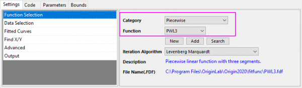
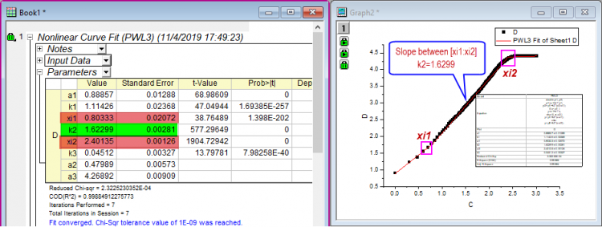

FAQ-1024 Wie führe ich eine lineare Anpassung auf einen Teil des Log-Log-Diagramms durch?
PartlyLinearFit-on-LogScale
Letztes Update: 04.11.2019
Falls Sie ein Log-Log-Diagramm haben und eine lineare Anpassung auf ein Segment der Kurve durchführen möchten, können Sie
direkt einen scheinbaren Fit durchführen, wenn Sie bereits den genauen Bereich des Eingabesegments kennen:
- Wählen Sie das Segment mit Hilfe des Datenselektors aus oder öffnen Sie den Dialog Lineare Anpassung. Dort bearbeiten Sie den Eingabebereich auf der Registerkarte Eingabe und aktivieren Sie das Kontrollkästchen Scheinbarer Fit in der Fit-Steuerung des Dialogs Lineare Anpassung.
- Klicken Sie auf OK, um die lineare Anpassung durchzuführen.
Ändern Sie die Skalierung in Linear und führen Sie eine stückweise Anpassung durch, falls Sie den genauen Bereich des Eingabesegments nicht kennen:
- Verwenden Sie Werte setzen, um die logarithmische Skalierung für Col(A) und Col(B) in Linear zu ändern. Geben Sie dazu log(A) in der Formelzelle von Spalte A ein.
- Öffnen Sie den Dialog NLFit und wählen Sie die Funktion PWL3 bzw. PWL2 in der Kategorie Stückweise, um eine stückweise Anpassung auf die gesamte Kurve durchzuführen.
- 
- In der Tabelle der Anpassungsergebnisse erhalten Sie die X-Koordinaten für die Wendepunkte (wie die Punkte xi1 und xi2 unten) und die Steigung des Zielsegments (wie die Parameter k2 unten).
- 
- Setzen Sie die X-Koordinatenwerte wieder zurück auf die logarithmische Skalierung, indem Sie die Berechnungen x1=10^(xi1) und x2=10^(xi2) ausführen.
- Sie können die X-Koordinatenwerte verwenden, um den scheinbaren Fit wie im ersten Fall oben durchzuführen.
Schlüsselwörter:log-log, einen Teil anpassen, lineare Anpassung, scheinbarer Ft, ein Segment anpassen, logarithmische Skalierung, teilweise anpassen, stückweise Anpassung